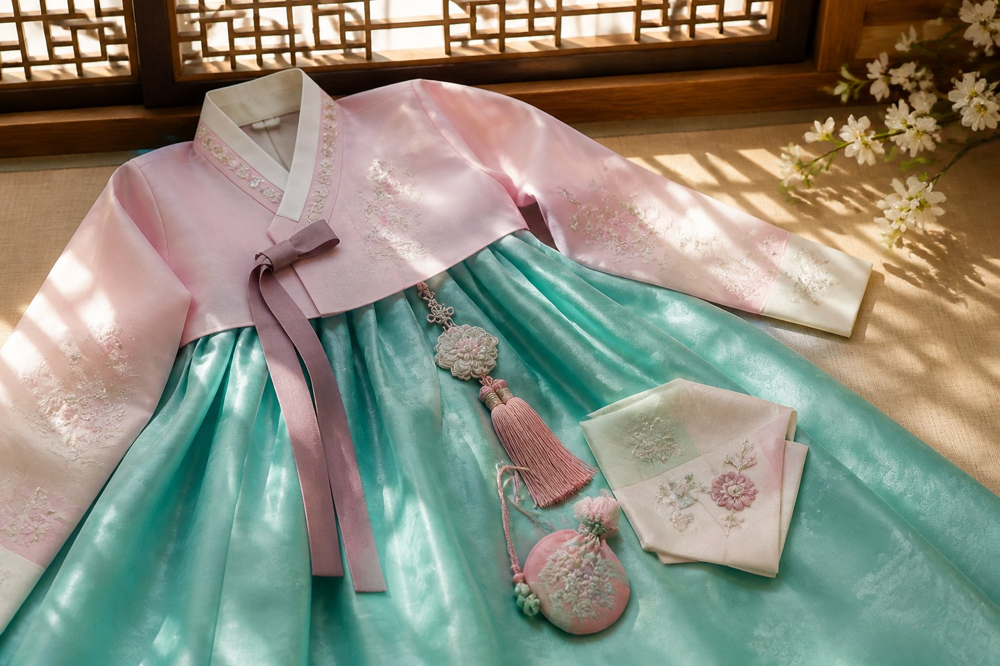

생활한복·소품
체험용 한복 대여 외에, 노리개·손수건·미니 한복 키링도 기념품으로 잘 팔립니다.
고궁 한복 대여와 별개로, 생활한복 느낌의 저고리·블라우스, 노리개, 손수건, 미니 한복 키링 같은 소품 기념품도 잘 팔립니다.
관광지 기념품 가게 가격 편차가 크니, 인사동·통인시장·백화점 전통 코너를 비교해 보세요. 천 소재와 마감 상태를 손으로 확인해 보는 것이 좋습니다.
사는 팁
체험 사진이 목적이면 대여, 가져갈 선물이면 소품이 현실적입니다. 대형 한복은 캐리어에 구김·부피 부담이 큽니다.
고궁 한복 대여와 별개로, 생활한복 느낌의 저고리·블라우스, 노리개, 손수건, 미니 한복 키링 같은 소품 기념품도 잘 팔립니다.
관광지 기념품 가게 가격 편차가 크니, 인사동·통인시장·백화점 전통 코너를 비교해 보세요. 천 소재와 마감 상태를 손으로 확인해 보는 것이 좋습니다.
사는 팁
체험 사진이 목적이면 대여, 가져갈 선물이면 소품이 현실적입니다. 대형 한복은 캐리어에 구김·부피 부담이 큽니다.